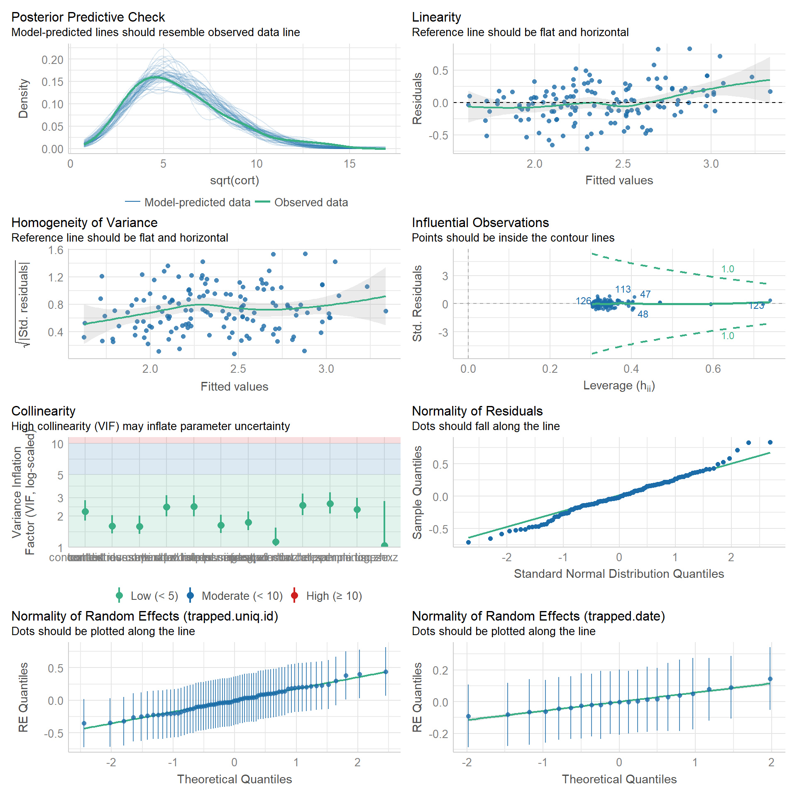
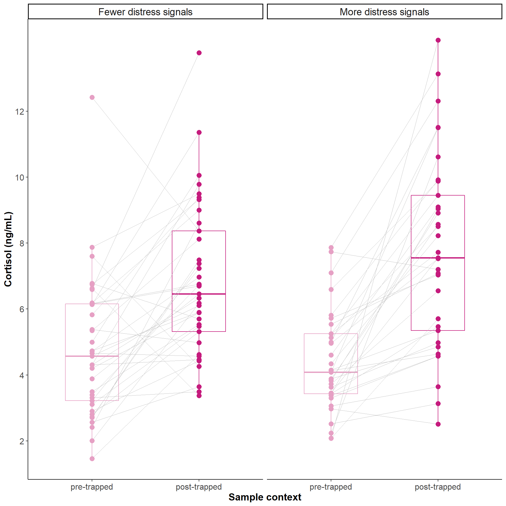

library(tidyverse) # tidy universe
library(lmerTest) # as lme4, but with p-values
library(emmeans) # estimated marginal means + post-hoc
library(performance) # model performance
library(ggpubr) # special ggplots, here ggpairedCortisol in trapped pigs
Libraries
set.seed(1989)Data
Analysis of cortisol concentration and behavior data of 70 pigs in two contexts (“pre” and “post”).
Read data
dat <- read_csv("../data/cortisol-trapped-pigs.csv")Rows: 140 Columns: 32
── Column specification ────────────────────────────────────────────────────────
Delimiter: ","
chr (14): trapped.uniq.id, uniq.group, outcome, context, sex, location.test...
dbl (17): sow, lat.helped.min, cort, trapped.pig, group.test.order, sample....
date (1): trapped.date
ℹ Use `spec()` to retrieve the full column specification for this data.
ℹ Specify the column types or set `show_col_types = FALSE` to quiet this message.Adjust data types
dat <- dat %>%
# make factors
mutate_at(vars(sow,
context,
sex), ~as.factor(.)) %>%
mutate(group.test.order.z = as.vector(scale(group.test.order))) %>%
mutate(distress.rate.sq.z = as.vector(scale(sqrt(distress.rate)))) %>%
mutate(invest.window.rate.per.min.sq.z = as.vector(scale(sqrt(invest.window.rate.per.min)))) %>%
mutate(dur.separated.min.z = as.vector(scale(dur.separated.min))) %>%
mutate(lat.helped.min.log.z = as.vector(scale(log(lat.helped.min)))) %>%
mutate(sample.time.hr.z = as.vector(scale(sample.time.hr)))
str(dat)tibble [140 × 38] (S3: tbl_df/tbl/data.frame)
$ trapped.uniq.id : chr [1:140] "DG2_F_3" "DG2_F_3" "DG2_F_4" "DG2_F_4" ...
$ uniq.group : chr [1:140] "DG2_F" "DG2_F" "DG2_F" "DG2_F" ...
$ outcome : chr [1:140] "Not helped" "Not helped" "Helped" "Helped" ...
$ context : Factor w/ 2 levels "post","pre": 1 2 1 2 1 2 1 2 1 2 ...
$ sow : Factor w/ 17 levels "5764","5931",..: 10 10 11 11 11 11 11 11 3 3 ...
$ sex : Factor w/ 2 levels "Female","Male": 1 1 2 2 2 2 1 1 2 2 ...
$ location.test.box : chr [1:140] "Side" "Side" "Side" "Side" ...
$ uniq.id.helper : chr [1:140] "DG2_F_Human" "DG2_F_Human" "DG2_F_2" "DG2_F_2" ...
$ helper.previously.trapped : chr [1:140] "na" "na" "yes" "yes" ...
$ helper.is.kin : chr [1:140] "na" "na" "no" "no" ...
$ plate_name : chr [1:140] "Petra Cort 03.06.21" "Petra Cort 03.06.21" "Petra Cort 09.06.21" "Petra Cort 09.06.21" ...
$ observations : chr [1:140] "DG2_F3_07.09.20" "DG2_F3_07.09.20" "DG2_F4_09.09.20" "DG2_F4_09.09.20" ...
$ distressrate.cat : chr [1:140] "<1 min" "<1 min" ">1 min" ">1 min" ...
$ lat.helped.min : num [1:140] 20 20 3.69 3.69 1.22 ...
$ cort : num [1:140] 4.26 7.6 8.91 3.83 6.55 ...
$ trapped.pig : num [1:140] 3 3 4 4 5 5 6 6 7 7 ...
$ group.test.order : num [1:140] 1 1 6 6 7 7 2 2 4 4 ...
$ sample.pairs : num [1:140] 3 3 4 4 5 5 6 6 7 7 ...
$ trapped.date : Date[1:140], format: "2020-09-07" "2020-09-07" ...
$ sample.time : chr [1:140] "10H 55M 0S" "8H 40M 0S" "10H 53M 0S" "8H 28M 0S" ...
$ sample.time.hr : num [1:140] 10.92 8.67 10.88 8.47 12.07 ...
$ invest.window.num : num [1:140] 25 25 17 17 5 5 34 34 35 35 ...
$ invest.window.rate.per.min : num [1:140] 1.25 1.25 4.62 4.62 4.13 ...
$ screams.num : num [1:140] 5 5 10 10 2 2 1 1 0 0 ...
$ screams.rate.per.min : num [1:140] 0.251 0.251 2.719 2.719 1.654 ...
$ escape.num : num [1:140] 4 4 4 4 1 1 6 6 1 1 ...
$ escape.rate.per.min : num [1:140] 0.201 0.201 1.088 1.088 0.827 ...
$ distress.num : num [1:140] 9 9 14 14 3 3 7 7 1 1 ...
$ distress.rate : num [1:140] 0.45 0.45 3.8 3.8 2.47 ...
$ distress.yn : num [1:140] 1 1 1 1 1 1 1 1 1 1 ...
$ separation_dur : chr [1:140] "6M 15.4S" "6M 15.4S" "5M 46.24S" "5M 46.24S" ...
$ dur.separated.min : num [1:140] 6.26 6.26 5.77 5.77 6.09 ...
$ group.test.order.z : num [1:140] -1.538 -1.538 0.227 0.227 0.58 ...
$ distress.rate.sq.z : num [1:140] -0.474 -0.474 1.261 1.261 0.748 ...
$ invest.window.rate.per.min.sq.z: num [1:140] -1.3847 -1.3847 0.1993 0.1993 0.0198 ...
$ dur.separated.min.z : num [1:140] 0.0722 0.0722 -0.4086 -0.4086 -0.0933 ...
$ lat.helped.min.log.z : num [1:140] 1.627 1.627 0.208 0.208 -0.723 ...
$ sample.time.hr.z : num [1:140] -0.116 -1.213 -0.132 -1.31 0.445 ...Linear mixed model
Run full model
contr = lmerControl(optCtrl = list(maxfun = 10000000), calc.derivs = FALSE)- full model with test and control predictors
mod <- lmerTest::lmer(sqrt(cort) ~
# test predictors
context*distress.rate.sq.z +
context*invest.window.rate.per.min.sq.z +
context*dur.separated.min.z +
context*lat.helped.min.log.z +
# control predictors
sex +
group.test.order.z +
sample.time.hr.z +
# random/nested factors
(1|trapped.uniq.id) +
(1|trapped.date),
# data set
data = dat,
REML = TRUE,
# numerical optimizer
control = contr)Run reduced model
mod.red <- lmerTest::lmer(sqrt(cort) ~
# no test predictors
# control predictors
sex +
group.test.order.z +
sample.time.hr.z +
# random/nested factors
(1|trapped.uniq.id) +
(1|trapped.date),
# data set
data = dat,
REML = TRUE,
# numerical optimizer
control = contr)Model comparison
anova(update(mod.red, REML = FALSE), update(mod, REML = FALSE), test = "Chisq")Data: dat
Models:
update(mod.red, REML = FALSE): sqrt(cort) ~ sex + group.test.order.z + sample.time.hr.z + (1 | trapped.uniq.id) + (1 | trapped.date)
update(mod, REML = FALSE): sqrt(cort) ~ context * distress.rate.sq.z + context * invest.window.rate.per.min.sq.z + context * dur.separated.min.z + context * lat.helped.min.log.z + sex + group.test.order.z + sample.time.hr.z + (1 | trapped.uniq.id) + (1 | trapped.date)
npar AIC BIC logLik deviance Chisq Df
update(mod.red, REML = FALSE) 7 215.95 236.54 -100.973 201.95
update(mod, REML = FALSE) 16 182.92 229.98 -75.459 150.92 51.028 9
Pr(>Chisq)
update(mod.red, REML = FALSE)
update(mod, REML = FALSE) 6.899e-08 ***
---
Signif. codes: 0 '***' 0.001 '**' 0.01 '*' 0.05 '.' 0.1 ' ' 1Summary of model
- only factor
contextand its interaction withdistress.rate.sq.zhas a significant effect
summary(mod)Linear mixed model fit by REML. t-tests use Satterthwaite's method [
lmerModLmerTest]
Formula:
sqrt(cort) ~ context * distress.rate.sq.z + context * invest.window.rate.per.min.sq.z +
context * dur.separated.min.z + context * lat.helped.min.log.z +
sex + group.test.order.z + sample.time.hr.z + (1 | trapped.uniq.id) +
(1 | trapped.date)
Data: dat
Control: contr
REML criterion at convergence: 201.6
Scaled residuals:
Min 1Q Median 3Q Max
-2.02263 -0.42141 -0.03169 0.51270 2.36888
Random effects:
Groups Name Variance Std.Dev.
trapped.uniq.id (Intercept) 0.0711 0.2666
trapped.date (Intercept) 0.0146 0.1208
Residual 0.1235 0.3515
Number of obs: 140, groups: trapped.uniq.id, 70; trapped.date, 21
Fixed effects:
Estimate Std. Error df
(Intercept) 2.661164 0.081610 58.576123
contextpre -0.556525 0.088326 117.855848
distress.rate.sq.z 0.081476 0.057806 106.730772
invest.window.rate.per.min.sq.z 0.069455 0.072591 105.732009
dur.separated.min.z 0.001556 0.060294 102.479894
lat.helped.min.log.z -0.060615 0.073806 104.349138
sexMale -0.007979 0.091750 59.281857
group.test.order.z -0.044787 0.054548 21.818760
sample.time.hr.z -0.006710 0.055913 67.221385
contextpre:distress.rate.sq.z -0.123578 0.063160 65.061871
contextpre:invest.window.rate.per.min.sq.z -0.096278 0.078109 64.855367
contextpre:dur.separated.min.z -0.070774 0.062980 64.945413
contextpre:lat.helped.min.log.z 0.054538 0.078319 65.009575
t value Pr(>|t|)
(Intercept) 32.608 < 2e-16 ***
contextpre -6.301 5.3e-09 ***
distress.rate.sq.z 1.409 0.1616
invest.window.rate.per.min.sq.z 0.957 0.3408
dur.separated.min.z 0.026 0.9795
lat.helped.min.log.z -0.821 0.4134
sexMale -0.087 0.9310
group.test.order.z -0.821 0.4205
sample.time.hr.z -0.120 0.9048
contextpre:distress.rate.sq.z -1.957 0.0547 .
contextpre:invest.window.rate.per.min.sq.z -1.233 0.2222
contextpre:dur.separated.min.z -1.124 0.2653
contextpre:lat.helped.min.log.z 0.696 0.4887
---
Signif. codes: 0 '***' 0.001 '**' 0.01 '*' 0.05 '.' 0.1 ' ' 1
Correlation matrix not shown by default, as p = 13 > 12.
Use print(x, correlation=TRUE) or
vcov(x) if you need it- with
car::Anova()we calculate Deviance table and \(\chi^2\) and \(F\) statistic, type III because of significant interactions
car::Anova(mod, type ="III", test.statistic = "Chisq")Analysis of Deviance Table (Type III Wald chisquare tests)
Response: sqrt(cort)
Chisq Df Pr(>Chisq)
(Intercept) 1063.3141 1 < 2.2e-16 ***
context 39.7000 1 2.961e-10 ***
distress.rate.sq.z 1.9866 1 0.1587
invest.window.rate.per.min.sq.z 0.9155 1 0.3387
dur.separated.min.z 0.0007 1 0.9794
lat.helped.min.log.z 0.6745 1 0.4115
sex 0.0076 1 0.9307
group.test.order.z 0.6741 1 0.4116
sample.time.hr.z 0.0144 1 0.9045
context:distress.rate.sq.z 3.8282 1 0.0504 .
context:invest.window.rate.per.min.sq.z 1.5193 1 0.2177
context:dur.separated.min.z 1.2628 1 0.2611
context:lat.helped.min.log.z 0.4849 1 0.4862
---
Signif. codes: 0 '***' 0.001 '**' 0.01 '*' 0.05 '.' 0.1 ' ' 1car::Anova(mod, type ="III", test.statistic = "F")Analysis of Deviance Table (Type III Wald F tests with Kenward-Roger df)
Response: sqrt(cort)
F Df Df.res Pr(>F)
(Intercept) 1035.4992 1 57.016 < 2.2e-16 ***
context 39.0223 1 117.010 6.997e-09 ***
distress.rate.sq.z 1.9151 1 106.626 0.1693
invest.window.rate.per.min.sq.z 0.8930 1 105.722 0.3468
dur.separated.min.z 0.0006 1 102.262 0.9799
lat.helped.min.log.z 0.6620 1 104.291 0.4177
sex 0.0073 1 58.952 0.9324
group.test.order.z 0.6580 1 20.537 0.4266
sample.time.hr.z 0.0140 1 66.206 0.9063
context:distress.rate.sq.z 3.8279 1 65.071 0.0547 .
context:invest.window.rate.per.min.sq.z 1.5193 1 64.864 0.2222
context:dur.separated.min.z 1.2627 1 64.954 0.2653
context:lat.helped.min.log.z 0.4849 1 65.018 0.4887
---
Signif. codes: 0 '***' 0.001 '**' 0.01 '*' 0.05 '.' 0.1 ' ' 1Performance of model
performancepackage used to check model assumptions
performance::check_model(mod)
Estimated Marginal Means and multiple comparisons
emmeanspackage to obtain the estimated marginal means (EMMs) forcontext, as back-transformed estimates
emm <- emmeans(mod,
specs = pairwise ~ context,
type = "response",
adjust = "tukey")NOTE: Results may be misleading due to involvement in interactionsNote: Use 'contrast(regrid(object), ...)' to obtain contrasts of back-transformed estimatesemm$emmeans context response SE df lower.CL upper.CL
post 7.06 0.363 42.5 6.35 7.81
pre 4.41 0.287 42.4 3.85 5.01
Results are averaged over the levels of: sex
Degrees-of-freedom method: kenward-roger
Confidence level used: 0.95
Intervals are back-transformed from the sqrt scale emm$contrasts contrast estimate SE df t.ratio p.value
post - pre 0.557 0.0891 117 6.247 <.0001
Results are averaged over the levels of: sex
Note: contrasts are still on the sqrt scale
Degrees-of-freedom method: kenward-roger Plot
dat.plot <- dat %>%
select(trapped.uniq.id, context, cort, distressrate.cat) %>%
pivot_wider(names_from = "context",
names_prefix = "cort.",
values_from = "cort")plot <- dat.plot %>%
ggpaired(cond1="cort.pre",
cond2="cort.post",
color="condition",
palette=c("#E6A0C4","#C51B7D"),
line.color="gray",
line.size=0.3,
legend="none",
point.size=3,
ylab="Cortisol (ng/mL)",
xlab="Sample context",
facet.by="distressrate.cat") +
scale_x_discrete(labels=c("pre-trapped","post-trapped")) +
scale_y_continuous(breaks=seq(0,12,by=2)) +
facet_wrap(~distressrate.cat,
labeller= labeller(distressrate.cat =
c("<1 min" = "Fewer distress signals",
">1 min" = "More distress signals"))) +
my_theme +
theme(strip.text = element_text(size = 14),
legend.position = "none")Warning: `gather_()` was deprecated in tidyr 1.2.0.
Please use `gather()` instead.plot
How to cite R
“All analyses were performed using R Statistical Software (version 4.2.0; R Core Team 2022)”.
Reference: R Core Team (2022). R: A language and environment for statistical computing. R Foundation for Statistical Computing, Vienna, Austria. URL https://www.R-project.org/.
citation()
To cite R in publications use:
R Core Team (2022). R: A language and environment for statistical
computing. R Foundation for Statistical Computing, Vienna, Austria.
URL https://www.R-project.org/.
Ein BibTeX-Eintrag für LaTeX-Benutzer ist
@Manual{,
title = {R: A Language and Environment for Statistical Computing},
author = {{R Core Team}},
organization = {R Foundation for Statistical Computing},
address = {Vienna, Austria},
year = {2022},
url = {https://www.R-project.org/},
}
We have invested a lot of time and effort in creating R, please cite it
when using it for data analysis. See also 'citation("pkgname")' for
citing R packages.version$version.string[1] "R version 4.2.0 (2022-04-22 ucrt)"citation("tidyverse")
Um Paket 'tidyverse' in Publikationen zu zitieren, nutzen Sie bitte:
Wickham et al., (2019). Welcome to the tidyverse. Journal of Open
Source Software, 4(43), 1686, https://doi.org/10.21105/joss.01686
Ein BibTeX-Eintrag für LaTeX-Benutzer ist
@Article{,
title = {Welcome to the {tidyverse}},
author = {Hadley Wickham and Mara Averick and Jennifer Bryan and Winston Chang and Lucy D'Agostino McGowan and Romain François and Garrett Grolemund and Alex Hayes and Lionel Henry and Jim Hester and Max Kuhn and Thomas Lin Pedersen and Evan Miller and Stephan Milton Bache and Kirill Müller and Jeroen Ooms and David Robinson and Dana Paige Seidel and Vitalie Spinu and Kohske Takahashi and Davis Vaughan and Claus Wilke and Kara Woo and Hiroaki Yutani},
year = {2019},
journal = {Journal of Open Source Software},
volume = {4},
number = {43},
pages = {1686},
doi = {10.21105/joss.01686},
}citation("lmerTest")
To cite lmerTest in publications use:
Kuznetsova A, Brockhoff PB, Christensen RHB (2017). "lmerTest
Package: Tests in Linear Mixed Effects Models." _Journal of
Statistical Software_, *82*(13), 1-26. doi:10.18637/jss.v082.i13
<https://doi.org/10.18637/jss.v082.i13>.
Ein BibTeX-Eintrag für LaTeX-Benutzer ist
@Article{,
title = {{lmerTest} Package: Tests in Linear Mixed Effects Models},
author = {Alexandra Kuznetsova and Per B. Brockhoff and Rune H. B. Christensen},
journal = {Journal of Statistical Software},
year = {2017},
volume = {82},
number = {13},
pages = {1--26},
doi = {10.18637/jss.v082.i13},
}citation("emmeans")
Um Paket 'emmeans' in Publikationen zu zitieren, nutzen Sie bitte:
Lenth R (2022). _emmeans: Estimated Marginal Means, aka Least-Squares
Means_. R package version 1.8.1-1,
<https://CRAN.R-project.org/package=emmeans>.
Ein BibTeX-Eintrag für LaTeX-Benutzer ist
@Manual{,
title = {emmeans: Estimated Marginal Means, aka Least-Squares Means},
author = {Russell V. Lenth},
year = {2022},
note = {R package version 1.8.1-1},
url = {https://CRAN.R-project.org/package=emmeans},
}citation("performance")
Um Paket 'performance' in Publikationen zu zitieren, nutzen Sie bitte:
Lüdecke et al., (2021). performance: An R Package for Assessment,
Comparison and Testing of Statistical Models. Journal of Open Source
Software, 6(60), 3139. https://doi.org/10.21105/joss.03139
Ein BibTeX-Eintrag für LaTeX-Benutzer ist
@Article{,
title = {{performance}: An {R} Package for Assessment, Comparison and Testing of Statistical Models},
author = {Daniel Lüdecke and Mattan S. Ben-Shachar and Indrajeet Patil and Philip Waggoner and Dominique Makowski},
year = {2021},
journal = {Journal of Open Source Software},
volume = {6},
number = {60},
pages = {3139},
doi = {10.21105/joss.03139},
}citation("ggpubr")
Um Paket 'ggpubr' in Publikationen zu zitieren, nutzen Sie bitte:
Kassambara A (2020). _ggpubr: 'ggplot2' Based Publication Ready
Plots_. R package version 0.4.0,
<https://CRAN.R-project.org/package=ggpubr>.
Ein BibTeX-Eintrag für LaTeX-Benutzer ist
@Manual{,
title = {ggpubr: 'ggplot2' Based Publication Ready Plots},
author = {Alboukadel Kassambara},
year = {2020},
note = {R package version 0.4.0},
url = {https://CRAN.R-project.org/package=ggpubr},
}Session Info
sessionInfo()R version 4.2.0 (2022-04-22 ucrt)
Platform: x86_64-w64-mingw32/x64 (64-bit)
Running under: Windows 10 x64 (build 19045)
Matrix products: default
locale:
[1] LC_COLLATE=German_Germany.utf8 LC_CTYPE=German_Germany.utf8
[3] LC_MONETARY=German_Germany.utf8 LC_NUMERIC=C
[5] LC_TIME=German_Germany.utf8
attached base packages:
[1] stats graphics grDevices utils datasets methods base
other attached packages:
[1] ggpubr_0.4.0 performance_0.9.2 emmeans_1.8.1-1 lmerTest_3.1-3
[5] lme4_1.1-30 Matrix_1.5-3 forcats_0.5.1 stringr_1.4.0
[9] dplyr_1.0.9 purrr_0.3.4 readr_2.1.2 tidyr_1.2.0
[13] tibble_3.1.7 ggplot2_3.3.6 tidyverse_1.3.1
loaded via a namespace (and not attached):
[1] nlme_3.1-157 pbkrtest_0.5.1 fs_1.5.2
[4] bit64_4.0.5 lubridate_1.8.0 insight_0.18.4
[7] httr_1.4.4 numDeriv_2016.8-1.1 tools_4.2.0
[10] backports_1.4.1 utf8_1.2.2 R6_2.5.1
[13] mgcv_1.8-40 DBI_1.1.3 colorspace_2.0-3
[16] withr_2.5.0 tidyselect_1.1.2 bit_4.0.4
[19] compiler_4.2.0 cli_3.3.0 rvest_1.0.3
[22] see_0.7.3 xml2_1.3.3 sandwich_3.0-2
[25] labeling_0.4.2 bayestestR_0.13.0 scales_1.2.1
[28] mvtnorm_1.1-3 digest_0.6.29 minqa_1.2.4
[31] rmarkdown_2.16 pkgconfig_2.0.3 htmltools_0.5.2
[34] dbplyr_2.2.1 fastmap_1.1.0 htmlwidgets_1.5.4
[37] rlang_1.0.6 readxl_1.4.0 rstudioapi_0.14
[40] farver_2.1.0 generics_0.1.3 zoo_1.8-10
[43] jsonlite_1.8.0 vroom_1.5.7 car_3.1-0
[46] magrittr_2.0.3 patchwork_1.1.1 Rcpp_1.0.8.3
[49] munsell_0.5.0 fansi_1.0.3 abind_1.4-5
[52] lifecycle_1.0.2 stringi_1.7.6 multcomp_1.4-20
[55] yaml_2.3.5 carData_3.0-5 MASS_7.3-58
[58] grid_4.2.0 ggrepel_0.9.1 parallel_4.2.0
[61] crayon_1.5.1 lattice_0.20-45 haven_2.5.0
[64] splines_4.2.0 hms_1.1.2 knitr_1.40
[67] pillar_1.8.1 boot_1.3-28 estimability_1.4.1
[70] ggsignif_0.6.3 codetools_0.2-18 reprex_2.0.2
[73] glue_1.6.2 evaluate_0.16 modelr_0.1.9
[76] vctrs_0.4.1 nloptr_2.0.3 tzdb_0.3.0
[79] cellranger_1.1.0 gtable_0.3.1 datawizard_0.6.1
[82] assertthat_0.2.1 xfun_0.31 xtable_1.8-4
[85] broom_1.0.1 coda_0.19-4 rstatix_0.7.0
[88] survival_3.3-1 TH.data_1.1-1 ellipsis_0.3.2